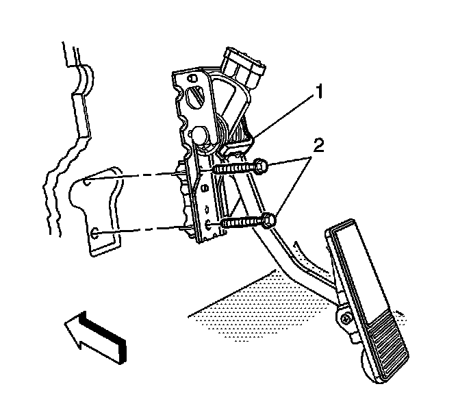

Accelerator Pedal Position Sensor: Service and Repair
Accelerator Pedal Position Sensor Replacement
Removal Procedure

1. Remove the left instrument panel (I/P) sound insulator. Refer to Instrument Panel Insulator Panel Replacement - Left Side (Left Hand Drive) (Service and Repair)Instrument Panel Insulator Panel Replacement - Left Side (Right Hand Drive) (Service and Repair) .
2. Disconnect the accelerator pedal position (APP) sensor electrical connector.
3. Remove the accelerated pedal bolts (2).
4. Remove the accelerator pedal (1) from the vehicle.
Installation Procedure
1. Position the accelerator pedal (1) to the vehicle.
Notice: Refer to Fastener Notice (Fastener Notice) .
2. Install the accelerator pedal bolts (2).
Tighten the bolts to 5 N.m (44 lb in).
3. Connect APP sensor electrical connector.
4. Install the left I/P sound insulator. Refer to Instrument Panel Insulator Panel Replacement - Left Side (Left Hand Drive) (Service and Repair)Instrument Panel Insulator Panel Replacement - Left Side (Right Hand Drive) (Service and Repair) .